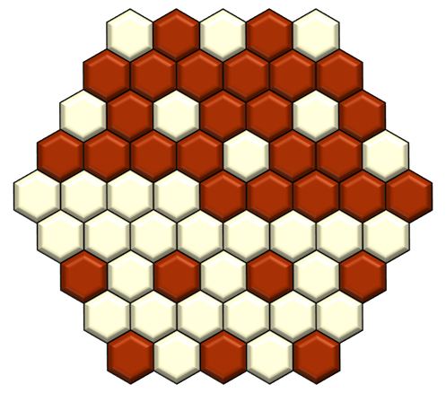
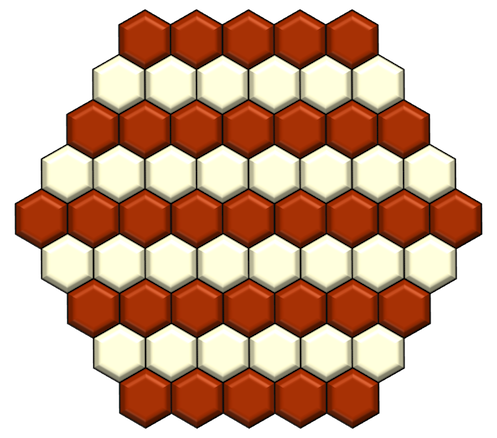

Closest Possible Game of Catchup? Lowest Possible Winning Score?
just some designerly navel gazing for your edification:
http://nickbentleygames.wordpress.com/2013/08/19/catchup-closest-game-lowest-winning-score/
Hey you. Gird yourself for some designerly navel-gazing because I’m about to expound proudly (but briefly) (again) about my game Catchup, my most popular game design.
I’m trying to document everything I know about the game leading up to a forthcoming iOS version and possible commercial publication. Here I try to answer the two questions in the title of this post; I hope it’ll bring to light a bit of the game’s hidden complexity, if only a little.
The short answers to both questions in the title of this post are I don’t know. By this I mean I don’t have answers I can prove. However I do have answers I can’t prove but which I suspect are correct, so I’ll discuss those. Read Catchup’s rules here if you’re not familiar with them. Here we go:
What’s the closest possible game of Catchup?
…and what do we mean by “closest”, anyway? In games decided by points, a close game is usually taken to mean a game decided by few points. Catchup is decided by points (your score is the size of your largest group of stones on the board when the board is full), so let’s go with that. But in Catchup, the players’ largest groups can be exactly the same size, and if they are, the players compare their second largest groups, and so on, until they come to a pair which aren’t the same size, and whoever owns the largest wins (ties are impossible). So for Catchup the question is really: “In the closest possible outcome, how many tiebreakers must be triggered before you get to a definitive result?”
I believe the answer is 8. Here’s what the board looks like after the final turn (minus the scoring track, which I’ve left out because I’m messing with new graphics and didn’t have time to add the track):

In this game the final score is:
23-1-1-1-1-1-1-1-1 (White’s score)
23-1-1-1-1-1-1-1-0 (Red’s score)
Insane. Whether this could happen between two players doing their best to win, I don’t know. In the 800+ games of Catchup I’ve played, only two have reached the second tie-breaker and none have gone further. If I ever see one that does I’ll have a (joyful) embolism. Close games, where players have to worry about the size of more than one group, have a “trying to keep a bunch of plates spinning in the air” quality – it’s easy to drop a plate, so a score like the one above would feel like a violation of physics. If you find an arrangement with more than 8 tiebreakers, I’d love to know about it.
UPDATE: a reader sent me another way to get 8 tiebreakers, which has the virtue of making the final board look like a Yin-Yang. Rock.
What’s the lowest possible winning score?
The answer depends on what we mean by “winning score”. If we include games that go to tiebreak and consider only the score of the tie-breaking groups, then the answer is clearly 1, as in the example above. But we could also ask: how small can a player’s largest group be under the condition that she wins the game? I think I know the right answer here: 9. There are different arrangements that give this answer, but here’s the simplest, and the one that best illustrates why it probably can’t be lower:

Here the final score is:
9 (Red’s score)
8 (White’s score)
Now try to imagine modifying this arrangement to create a smaller “largest group” for the winner, and you’ll quickly see the dilemma.
I don’t know if this of any actual interest to readers so I’ll STFU now.